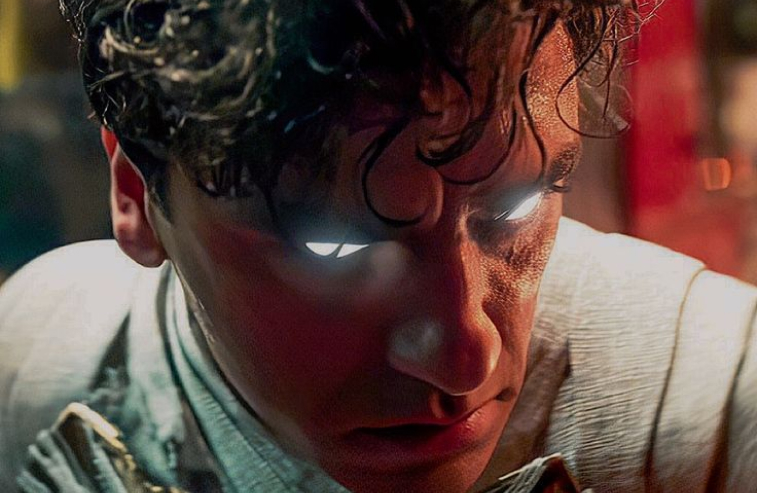

inside the series

Qui sotto troverai tutte le info che stai cercando sulla serie Moon Knight, uscita poco più di un anno fa. Troverai le tre cose necessarie a conoscere una serie:
Qui sotto troverai tutte le info che stai cercando sulla serie Moon Knight, uscita poco più di un anno fa. Troverai le tre cose necessarie a conoscere una serie:
La serie segue inizialmente la storia di Steven Grant, un londinese timido e appassionato di mitologia egizia. Grant però soffre di quello che, apparentemente, sembra un semplice disturbo del sonno, che lo disorienta nello spazio e nel tempo. Più avanti scoprirà che invece soffre di un disturbo dissociativo dell’identità, e di essere una delle personalità di Marc Spector, un americano ex mercenario.
Morto e poi resuscitato dal Dio egizio Khonshu, Marc diviene Moon Knight, suo avatar e giustiziere nella lotta contro Arthur Harrow. Egli sta cercando di liberare la Dea Ammit, di cui lui è avatar, così da poter giustiziare chiunque abbia commesso o commetterà in futuro un atto dannoso per altri
Dopo un’iniziale lotta di supremazia fra Marc e Steven, i due capiscono che devono collaborare unendo le loro capacità e conoscenze per poter affrontare la minaccia. Nel loro percorso, verranno aiutati dalla moglie di Marc, Layla El-Faoul, e dalla Dea Taweret.
Per dare un volto a questi nomi e immagini a questo testo, puoi guardare il trailer qui accanto. Ma mi raccomando, continua a scorrere per scoprire:


Dopo aver dato finalmente un volto a personaggi come Khonshu, e aver capito la bravura di Oscar Isaac nell’interpretare 3 personaggi con caratteristiche diverse ma con lo stesso volto, ti svelo un retroscena. Sapevi che nelle scene in cui Oscar ha interpretato insieme sia Steven che Marc, recitava con il fratello, Michael Benjamin Hernandez?
Se vuoi sapere ancora altro continua con le:

Le curiosità che troverai in questa sezione sono state tratte dal docu-film: Marvel Studios' Assembled: The Making of Moon Knight. A raccontarle sono stati membri del cast e della troupe, i quali hanno rivelato retroscena divertenti e culturali, insieme a immagini inedite del set. Troverai alcune di esse qui sotto, mentre alcune delle immagini nella sezione dedicata nella Gallery.